리눅스마스터-1급 (2005-09-03 기출문제)
1과목: 리눅스 실무의 이해
1. 다음 중 운영체제와 이를 사용할 수 있는 CPU를 연결한 것 중 틀린 것은?
- 리눅스 - 옵테론 CPU
- OS/2 - PowerPC CPU
- MS-윈도우즈XP - 펜티엄 4
- 리눅스 - Cyrix
(정답률: 34%)

2. 다음 중 리눅스의 장점으로 거리가 가장 먼 것은?
- 뛰어난 네트워킹 환경을 제공한다.
- 완벽한 멀티유저, 멀티태스킹 환경을 제공한다.
- 대용량 시스템에서만 최적의 성능을 발휘한다.
- 가상콘솔 환경을 제공한다.
(정답률: 85%)
3. 다음 중 상용리눅스 배포판 중 틀린 것은?(문제오류로 실제 시험에서는 1,2,3,4번 모두 정답 처리 되었습니다. 여기서는 1번을 누르시면 정답 처리 됩니다.)
- Red Flag Linux
- SUSE Linux
- Red Hat Linux Enterprise3 WS
- Debian Linux(woody)
(정답률: 94%)
4. 다음 중 각 리눅스 배포판에 대한 설명으로 틀린 것은 어느 것인가?
- Red Hat - RPM기반의 패키지 관리기술을 제공한다.
- Suse - 이테니움2 또는 PPC장비를 지원하는 버전이 있다.
- Gentoo Linux - 리눅스 커널 2.6을 지원한다.
- Debian - 소스 방식으로 설치하는 배포판이다.
(정답률: 알수없음)
5. 아래의 파일이름을 통해 알 수 있는 리눅스 커널 사항으로 알맞은 것은?
- 32Bit CPU를 위한 커널이다.
- 개발 및 테스트 버전의 커널이다.
- 1737번의 패치가 있었다.
- 다중 프로세서를 위한 커널이다.
(정답률: 알수없음)
6. 다음 중 유닉스 운영체제로 틀린 것은?
- Solaris
- Slackware
- Minix
- HP-UX
(정답률: 32%)
7. 다음 중 리눅스용 응용프로그램과 이를 지원하기 위해 필요한 하드웨어와 연결된 것 중 알맞은 것은?
- Sane - 스캐너
- ProFtpd - 비디오 카드
- gcombust - 네트워크 카드
- Xmms - 이동형 저장장치
(정답률: 42%)
8. 다음 중 리눅스 시스템을 리부팅 하기위한 명령어와 거리가 가장 먼 것은?
- init 0
- init 6
- reboot
- shutdown -r now
(정답률: 67%)
9. 다음은 어떤 부트 매니저의 환경 설정 파일이다. 아래의 환경 설정내용을 보고 파악할 수 있는 내용과 가장 거리가 먼 것은?
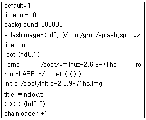
- 윈도우즈는 첫번째 하드디스크의 첫 번째 파티션에 위치하고 있다.
- 위의 환경설정 내용은 GRUB의 환경설정 내용 이다.
- 위의 설정파일로 리눅스를 부팅하면 GUI 모드로 부팅이 된다.
- 설치된 리눅스는 패치가 9번 적용된 커널 2.6 기반의 리눅스이다.
(정답률: 40%)
10. 다음 괄호 안에 들어갈 내용으로 알맞은 것은?(순서대로 (ㄱ) (ㄴ) (ㄷ) (ㄹ))
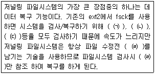
- 로그, 슈퍼블록, I-Node, 파티션 정보
- I-Node, 슈퍼블록, 비트맵, 로그
- 파티션 정보 로그 비트맵 슈퍼블록
- 슈퍼블록 로그 I-Node 파티션 정보
(정답률: 54%)
11. 다음 중 X-Window에 대한 설명으로 틀린 것은?
- 두 개의 개별 소프트웨어 부분에 의해 제어되는 서버/클라이언트 시스템이다.
- xhost라는 프로그램을 사용하여 원격지에서 접속할 수 있는 기능을 제공한다.
- 내부적으로 데이터를 처리하기 위해 X Protocol을 사용한다.
- X-Window 데스크탑 환경으로는 KDE, GNOME, XFree86이 있다.
(정답률: 67%)
12. 리눅스 콘솔에서 man rpm 명령어를 통해 rpm의 도움말을 보려 했으나 화면의 글자가 알아 볼 수 없는 문자로 나타났다. 이럴 경우 영문으로라도 매뉴얼 내용을 보기 위해 Shell 환경 변수를 변경하고자 할 때 다음의 명령어에서 괄호 안에 들어갈 내용으로 알맞은 것은?
- ENGLISH, YES
- CHARACTER, ENG
- CONTURY, 0
- LANG, C
(정답률: 65%)
13. 다음 중 현재 설정된 Shell 환경 변수를 볼 수 있는 명령어로 짝지어진 것 중 올바른 것은?
- export - path
- display - term
- set - printenv
- cat - dmesg
(정답률: 알수없음)
14. 다음 중 인터럽트의 종류가 아닌 것은?
- 입출력 인터럽트
- 하드웨어 인터럽트
- 콘솔 인터럽트
- 프로그램 종료 인터럽트
(정답률: 38%)
15. 다음 내용은 무엇에 대한 설명인가?(문제오류로 실제 시험에서는 1, 2번이 정답 처리 되었습니다. 여기서는 1번을 누르시면 정답 처리 됩니다.)
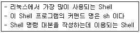
- Bash Shell
- Bourne Shell
- C Shell
- Korn Shell
(정답률: 65%)
16. OSI 7 Layer에서 한 시스템의 응용프로그램에서 보낸 데이터를 다른 시스템의 응용프로그램에서 읽을 수 있도록 하는 역할을 하는 계층으로 알맞은 것은?
- 물리 계층(Physical Layer)
- 네트워크 계층(Network Layer)
- 세션 계층(Session Layer)
- 표현 계층(Presentation Layer)
(정답률: 65%)
17. Layer 2 Switch 에서 IDS(침입탐지시스템) 등 이나, 기타 네트워크 관리를 위해 특정 포트의 Traffic 패킷을 다른 포트에서 모니터링 하려 할 때 사용하는 기능으로 알맞은 것은?
- Port Mirroring
- Port Enable
- Port Load Balance
- Port VLAN
(정답률: 58%)
18. 네트워크상에서 Packet 통신을 위해 필요한 기본적인 정보로서, 이 정보가 없으면, 내부 통신은 가능하지만 외부 네트워크로 패킷을 전달할 수 없다. 이 정보의 항목으로 알맞은 것은?
- 서브넷 마스크
- 게이트웨이 주소
- DNS 서버주소
- IP 주소
(정답률: 67%)
19. 리눅스에서 NAT를 사용하기 위한 필수 조건으로 틀린 것은?
- IPChains 혹은 IPTables 지원 가능한 커널
- External LAN Interface의 두개 이상의 IP 주소
- 올바른 IP 주소 대역
- External LAN 과 Internal LAN의 IP대역폭이 다를 것
(정답률: 12%)
20. 다음 중 TCP/IP 용어의 설명 중 틀린 것은?
- Broadcast address : 호스트 주소 영역이 '11111111’ 인 IP 주소
- Network address : 호스트 주소 영역이 ‘ 00000000’ 인 IP 주소
- Octet : 32비트 IP 주소의 네 부분을 이루는 8비트의 숫자
- Subnet Mask : IP 주소에서 네트워크 및 호스트 영역을 구별하는 데 사용되는 8 비트 숫자
(정답률: 34%)
2과목: 리눅스 시스템 관리
21. 다음 중 계정에 전화번호나 소속 회사 이름들에 대한 추가 사용자 정보를 부여하도록 해주는 명령어로 알맞은 것은?
- finger
- usermod
- chfn
- adduser
(정답률: 알수없음)
22. 다음 중 passwd 명령어를 이용하여 ihd란 사용자 계정을 어떠한 패스워드를 사용해도 로그온 가능 하도록 설정하기위한 옵션으로 알맞은 것은?
- -l
- -d
- -u
- -S
(정답률: 30%)
23. 리눅스에서 기본적으로 파일을 만들면 644 권한으로 파일이 생성되는데 이러한 파일 생성시 기본적으로 주어지는 권한을 변경할 수 있도록 해주는 명령어로 알맞은 것은?
- chmod
- chown
- umask
- mode
(정답률: 36%)
24. 다음 중 파일 및 디렉터리가 소속된 그룹을 변경하기 위해 사용되는 명령어로 알맞은 것은?
- chmod
- chgrp
- change
- umask
(정답률: 60%)
25. 다음 중 fsck명령어를 수행 후 반환되는 종료값이 1일 경우 의미하는 내용으로 알맞은 것은?
- 파일 시스템 에러가 고쳐짐
- 에러 없음
- 연산 에러
- 파일 시스템에 고쳐지지 않은 에러가 남았음
(정답률: 28%)
26. 아래의 구문은 5MB의 compres.tgz 파일을 2MB 단위로 분할 한 후 다시 합치기를 하는 명령어 이다. 괄호에 들어갈 내용으로 알맞은 것은?
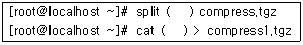
- -b 2048, com*
- -f 2, xa*
- -b 2m, xa*
- -f 2048, com*
(정답률: 32%)
27. 다음 중 .kde란 파일을 보기 위해 ls명령어에 반드시 필요한 옵션으로 알맞은 것은?
- -a
- -l
- -h
- -u
(정답률: 42%)
28. 다음 중 확장자가 iso 파일을 마운트하여 사용하기 위해 필요한 마운트 옵션으로 짝지어진 것 중 알맞은 것은?
- -t iso9660, -o username=root
- -t cdrom, -o iso9660
- -t iso9660, -o loop
- -t ext3, -o iso9660
(정답률: 57%)
29. 리눅스 사용자의 디스크 사용량을 제한하기 위해 사용하는 명령어로 알맞은 것은?
- fsck
- mount
- quota
- mkfs
(정답률: 65%)
30. 다음 중 프로세스 종료시 발생되는 사항으로 틀린 것은?
- 모든 신호를 무시
- 종료되는 프로세스를 좀비(Zombi)상태로 만듬
- 부모 프로세스에 자식 프로세스 유지 알림
- 파일을 메모리에서 내림, 디렉터리 반납
(정답률: 17%)
31. eject 명령어를 사용하여 CD-ROM을 Eject 하려고 하였으나 일반 사용자가 현재 CD-ROM이 마운트 되어 있는 /mnt/cdrom에 위치하고 있어 CD-ROM을 언마운트 할 수 없을 경우 사용하는 명령어 구문으로 가장 알맞은 것은?
- eject -f /mnt/cdrom
- killall /mnt/cdrom
- kill -9 /mnt/cdrom
- fuser -km /mnt/cdrom
(정답률: 0%)
32. 다음 중 top 명령어를 실행시 볼 수 있는 내용으로 틀린 것은?
- PID
- CPU 사용량
- 메모리 사용량
- 프로세스 사용자
(정답률: 알수없음)
33. 다음 중 프로세스 스케줄링의 우선순위를 변경 토록 해주는 유틸리티로 알맞은 것은?
- cron
- fg
- nice
- bg
(정답률: 64%)
34. 다음 중 RPM관련 프로그램으로 틀린 것은?
- RPM
- Kpackage
- GnoRPM
- XRoaster
(정답률: 알수없음)
35. 시스템 관리자 홍길동은 USB 이동형 저장장치를 이용해서 리눅스 시스템에 저장된 데이터를 백업하고자 한다. 이럴 경우 USB 이동형 저장장치를 리눅스의 USB 포트에 연결시 이를 사용하기 위한 마운트 장치명과 가장 관련이 깊은 것으로 알맞은 것은?(조건 : 리눅스 시스템에 현재 SCSI 장치가 없다.)
- /dev/null
- /dev/ide
- /dev/usbfs
- /dev/sda
(정답률: 알수없음)
36. 다음은 rpm명령어 수행시 자주 사용되는 -ivh --nodeps 옵션에 대한 설명으로 알맞은 것은?(문제오류로 실제 시험에서는 2, 3, 4번이 정답 처리 되었습니다. 여기서는 2번을 누르시면 정답 처리 됩니다.)
- 패키지 설치시 업그레이드를 수행한다.
- 설치가 되는 과정을 상세히 보여 준다.
- 패키지 설치 프로세스를 해쉬(#) 기호로 보여 준다.
- 의존성을 무시하고 설치한다.
(정답률: 75%)
37. 다음 중 패키지 확장자가 .deb 패키지를 사용하는 리눅스 배포판으로 알맞은 것은?
- SlackWare
- Debian
- RedHat
- Suse
(정답률: 73%)
38. 다음 중 gcc 컴파일러 대한 설명으로 틀린 것은?(문제오류로 실제 시험에서는 3, 4번이 정답 처리 되었습니다. 여기서는 3번을 누르시면 정답 처리 됩니다.)
- GNU C 컴파일러를 의미한다.
- 이식성이 좋은 C, C++ 컴파일러이다.
- 비주얼한 개발환경을 제공한다.
- 이 컴파일러로 명령을 하면 항상 a.out 형태로 결과가 만들어 진다.
(정답률: 78%)
39. 리눅스 파티션에 대한 설명으로 알맞은 것은?(문제오류로 실제 시험에서는 1, 2, 3, 4번이 정답 처리 되었습니다. 여기서는 1번을 누르시면 정답 처리 됩니다.)
- 리눅스는 최대 1개의 주파티션과 1개의 확장 파티션으로 구성된다.
- 확장 파티션은 1부터 12까지 생성할 수 있다.
- swap 파티션은 1GB 까지 설정가능하다.
- scsi 디스크의 파티션은 RAID구성에만 사용 가능하다.
(정답률: 79%)
40. 리눅스의 serial port관련된 설명 중 틀린 것은?
- 표준 serial 포트는 /dev/ttyS0부터 3까지 지원한다.
- ttyS0 과 ttyS2 는 IRQ 를 공유한다.
- ttyS1 과 ttyS3 은 IRQ 를 공유한다.
- /sbin/serialset 명령을 이용하면, serial 관련 설정이 가능하다.
(정답률: 20%)
41. 리눅스에서 주변장치 중 비디오카드 정보검색 및 모니터 설정 등을 위해서 사용하는 명령어로 틀린 것은?
- Xconfigurator
- XF86config
- XF86Setup
- Xcon
(정답률: 30%)
42. 리눅스 커널에 새로운 장치를 인식하게 하기 위해서, 취할 수 있는 방법으로 알맞은 것은?
- 커널 컴파일
- X윈도우 재설치
- 하드웨어 주소값 변경
- 프로세서 변경
(정답률: 57%)
43. 새로운 하드디스크를 리눅스에 장착하고, 재부팅시마다 하드디스크를 자동으로 마운트 할 수 있도록 설정하는 설정파일로 알맞은 것은?
- /etc/motd
- /etc/mountd.conf
- /etc/proftpd.conf
- /etc/fstab
(정답률: 55%)
44. 리눅스에서 새로운 하드디스크를 장착하고, 설정하는 과정에 대한 보기의 내용을 순서대로 나열한 것 중 알맞은 것은?
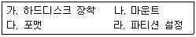
- 가 -> 다 -> 나 -> 라
- 가 -> 다 -> 라 -> 나
- 가 -> 라 -> 다 -> 나
- 가 -> 라 -> 나 -> 다
(정답률: 31%)
45. 리눅스로 software RAID를 구성하는 방법에 대해 서술한 것 중 틀린 것은?
- 가장 처음 작업해야 할 단계는 fdisk로 partition을 생성해야 한다.
- fdisk로 파티션 생성 후 즉시 mke2fs명령을 이용하여 RAID 디바이스를 포맷한다.
- 부팅때마다 자동으로 마운트되게 하기 위해 /etc/fstab에 등록한다.
- /etc/raidtab 파일은 소프트웨어 RAID 관련 설정이 담겨있다.
(정답률: 30%)
46. ext3저널링 파일시스템의 트랜잭션 수행단계에 해당하는 것 중 틀린 것은?
- 할당 단계
- 로깅 단계
- 추가 단계
- 위탁 단계
(정답률: 31%)
47. 다음 중 RAID LEVEL별 특징으로 올바르게 서술된 것 중 틀린 것은?(문제오류로 실제 시험에서는 2, 3번이 정답 처리 되었습니다. 여기서는 2번을 누르시면 정답 처리 됩니다.)
- RAID 0 : 스트라이핑으로 결함 허용기능은 없지만 속도가 빠르다.
- RAID 1 : 미러링으로 성능향상 기능은 없고, 구성비용이 비싸지만, 장애대비가 확실하다
- RAID 0+1 : 3개 이상의 디스크로 구성되며, RAID 0과 1의 특성을 모두 갖는다.
- RAID 5 : RIAD 0 보다 느리지만, 다른 레벨보다 빠른 성능을 내고, 결함허용을 지원한다.
(정답률: 55%)
48. 아래 나열된 장치명(Device name)에 대한 설명으로 틀린 것은?
- hda1은 첫번째 하드디스크의 첫번째 파티션 이다.
- sda1은 SCSI 장치중 ID 값이 제일 우선인 하드디스크를 의미한다.
- ttyS0 는 Windows 의 Comport 1과 동일하다.
- pts는 포인팅 디바이스의 심볼릭 링크이다.
(정답률: 39%)
49. CD-ROM이 IDE 장치의 Secondary Master 로 연결되어 있을 때, 일반적으로 사용하는 장치 파일 이름은?
- /dev/hda
- /dev/hdb
- /dev/hdc
- /dev/hdd
(정답률: 9%)
50. 리눅스 콘솔에서 사운드 카드를 제어하는 프로그램으로 알맞은 것은?
- sndconfig
- netconfig
- sysconfig
- sndcfg3
(정답률: 알수없음)
51. maillog의 파일사이즈가 너무 커져서 해당 로그 파일을 삭제하고자 한다. 가장 알맞게 서술한 것은?
- /var/log/maillog를 삭제한 후, crond를 재 구동한다.
- /var/log/maillog를 삭제한 후, sendmail을 재 구동한다.
- /var/log/maillog를 삭제한 후, syslogd를 재 구동한다.
- /var/log/maillog 를 삭제한 후, touch 명령으로 새로 생성해 준다.
(정답률: 31%)
52. root 사용자가 네트워크를 통한 원격에서 접속을 할 수 없도록, 제한하는 설정내용이 담긴 설정 파일로 알맞은 것은?
- /etc/issue.net
- /etc/profile
- /etc/shell
- /etc/securetty
(정답률: 46%)
53. 다음 중 네트워크 관련 설정파일이 설정된 위치 및 해석이 틀린 것은?
- hostname 설정 : /etc/hosts
- gateway 설정 : /etc/sysconfig/network
- ip 주소 구성 : /etc/sysconfig/network-scripts/ifcfg-ethx
- dns 설정 : /etc/resolv.conf
(정답률: 37%)
54. TCP_WRAPPER 설정의 영향을 받지 않는 프로세스들을 서술한 것 중 알맞은 것은?
- in.telnetd, ipop3d
- nfs, dns
- httpd, in.telnetd
- httpd, dns
(정답률: 43%)
55. 다음 중 리눅스의 부팅 및 초기화 과정에 대한 설명으로 틀린 것은?
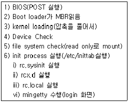
- MBR 영역에는 lilo나 grub같은 로더가 저장 되어 있다.
- Device Check 과정은 리눅스 커널이 직접 수행한다.
- file system check는 fsck를 이용하여, 파일 시스템 체크를 진행한다.
- init process는 /etc/inittab파일을 로딩하여 프로세스를 수행한다.
(정답률: 13%)
56. iptables 와 ipchains의 차이점으로 틀린 것은?
- iptables에서는 TCP -y 지시자는 --syn으로 바뀌었고 `-p tcp'다음에 와야 한다.
- iptables에서는 DENY target는 DROP으로 바뀌었다.
- iptables에서는 체인 이름은 256자까지 가능 하다.
- iptables에서는 MASQ와 REDIRECT는 더 이상 target으로 동작하지 않는다.
(정답률: 40%)
57. 저널링 파일시스템을 사용함으로서 얻을 수 있는 특징으로 틀린 것은?
- 파일 복구 시간을 단축할 수 있다.
- 파일을 저장전 저널링 시스템은 로그를 기록하여, 향후 장애에 대비한다.
- ext3저널링 시스템은 파일복구를 위해, 슈퍼블록, 비트맵, inode를 모두 검사한다.
- 파일 시스템영역은 관리 영력과 테이터 영역으로 구성된다.
(정답률: 44%)
58. 시스템에 telnet 프로토콜로, 로그인 했을때 아래 화면과 같이 로그인 후, 간단한 보안관련 공지사항을 출력하고자 한다. 이때 설정해야할 파일로 알맞은 것은?
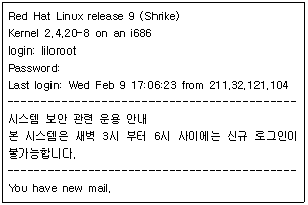
- /etc/issue
- /etc/motd
- /etc/issue.net
- /etc/messages
(정답률: 25%)
59. 다음 중 원격 백업을 위해 사용되는 프로그램으로 짝지어진 것 중 알맞은 것은?
- rdump, rsync, rdist, rcp
- ftp, dump, rsync, rcp
- dump, rsync, rdump, rdist
- rdist, ftp, dd, rsync
(정답률: 10%)
60. 다음은 백업을 하는 일반적인 요령을 서술한 것 중 틀린 것은?
- 루트 파일 시스템이나 /etc 디렉토리와 같은 자료는 자료가 바뀔때마다 full backup을 하는 것이 좋다.
- 사용자들의 자료는 자료의 중요도 및 업데이트 빈도에 따라 incremental backup과 Full backup 을 병행한다.
- 백업 테잎은 여러개의 테잎을 준비시 혼란의 우려가 있으므로 한 개의 백업 테잎을 이용하여 백업한다.
- 장기보관용 백업 테잎을 별도 준비하여 백업한다.
(정답률: 알수없음)
3과목: 네트워크 및 서비스의 활용
61. DSO(Dynamic Shared Object)의 장점으로 틀린것은?
- 필요에 따라 웹서버에 모듈이나 라이브러리를 언제든지 적재할 수 있다.
- 아파치를 재 컴파일하지 않아도 사용할 수 있다.
- 필요한 모듈에 따라 아파치를 재 컴파일 해야 한다.
- 모듈을 필요할 때 적재하기 때문에 시스템 리소스를 효율적으로 사용할 수 있다.
(정답률: 50%)
62. 아파치 설정파일인 httpd.conf는 크게 세 부분으로 나눠져 있다. 다음 중 설정파일에 없는 설정은 무엇인가？
- Global Environment
- Main Server configuration
- Local Environment
- Virtual Hosts
(정답률: 19%)
63. 여러 IP주소를 사용하여 아파치 웹 서버의 IP 기반 가상 호스팅 설정을 하려고 한다. 이에 대한 설명으로 틀린 것은?
- httpd.conf 파일의 NameVirtualHost 항목을 주석 제거 후 설정 변경한다.
- 사용하는 랜카드에 부여받은 IP주소를 추가로 설정한다.
- 설정하려는 도메인의 수만큼 IP주소를 확보 한다.
- 각 IP 주소별로 도메인 설정하여 사용한다.
(정답률: 40%)
64. 소스 컴파일하여 설치한 아파치 웹서버에서 현재 동작중인 아파치 모듈의 목록을 보려고 할 때 httpd 명령의 옵션 중 알맞은 것은?
- -D
- -m
- -V
- -l
(정답률: 50%)
65. MySQL의 소스 컴파일 설치과정 중 configure에서 MySQL이 사용할 기본 데이터베이스가 설치되는 곳을 지정하는 옵션으로 알맞은 것은?
- --prefix
- --with-charset
- --localstatedir
- --sysconfdir
(정답률: 17%)
66. MySQL 소스 설치 후 MySQL의 관리자 root의 비밀번호 123456을 설정하려고 하는데 쉘 상에서 사용되는 것 중에 가장 알맞은 것은?
- mysqladmin -u root password "123456"
- mysql -u root password "123456"
- mysqladmin -u root passwd "123456"
- mysql -u root passwd "123456"
(정답률: 13%)
67. 다음은 PHP가 동작하는 과정을 순서없이 나열한 것이다. 순서대로 나열한 것 중 알맞은 것은?
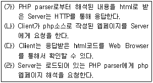
- (가)-(나)-(다)-(라)
- (가)-(다)-(라)-(나)
- (나)-(다)-(가)-(라)
- (나)-(라)-(가)-(다)
(정답률: 64%)
68. NFS 서버의 설정 파일인 /etc/exports 파일에서 사용할 수 있는 옵션으로 틀린 것은?
- root_squash
- no_root_squash
- nobody_squash
- all_squash
(정답률: 24%)
69. 아파치 웹서버에서는 사용자 인증을 제공하고 있는데 웹 서버 접근에 대한 인증은 물론 특정 디렉토리 접근에 대한 인증이 가능하다. 다음은 아파치 웹서버 설정파일인 httpd.conf에서 DocumentRoot인 /usr/local/apache/htdocs에 인증설정을 하여 웹 서버 접근 자체에 대한 인증 설정한 내용이다. 아래 설명 중 틀린 것은 무엇인가?
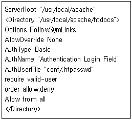
- 인증 타입은 현재 Basic을 지원하며 인증 영역에 대한 이름을 AuthName 지시자로 설정하고 있다.
- 지정한 유저로만 디렉토리 접근을 허용하고 패스워드 인증이 올바르게 된 사용자들만 접근이 가능하다.
- 인증 사용자와 패스워드를 가진 패스워드파일은 /usr/local/apache/conf/.htpasswd에 설정할 수 있다.
- ihd 사용자를 등록하려고 할 때 htpasswd /usr/local/apache/conf/.htpasswd ihd로 등록 할 수 있다.
(정답률: 알수없음)
70. 시스템관리자 홍길동은 php의 어떠한 소스도 파일 업로드 용량을 10M를 넘지 않도록 제한하려고 한다면 어떤 설정 파일의 어느 부분을 변경해야 하는지 알맞게 짝지어진 것은?
- php.ini - upload_max_filesize
- httpd.conf - upload_max_filesize
- php.ini - UploadMaxFileSize
- httpd.conf - UploadMaxFileSize
(정답률: 32%)
71. smb.conf의 설정 중에서 Global Sessions의 내용과 그에 대한 설명으로 틀린 것은?(문제오류로 실제 시험에서는 1, 2, 3번이 정답 처리 되었습니다. 여기서는 1번을 누르시면 정답 처리 됩니다.)
- host allow = 192.168.1. : 삼바 서버에 접속이 가능한 호스트를 지정한다.
- printing = lprng : 사용하고자하는 프린터를 설정한 파일을 지정한다.
- quest account = nobody : 시스템 계정 없이 로그인 했을 때 적용할 사용자 계정이다.
- username map = /etc/samba/smbusers : 리눅스 사용자 이름과 삼바 사용자 이름이 다를 경우 매핑시켜 준다.
(정답률: 알수없음)
72. RedHat계열에서 NFS서버를 구동시킬 때 필요한 구동 스크립트와 관계가 있는 것 중 알맞은 것은?
- /etc/rc.d/init.d/rpcidmapd
- /etc/rc.d/init.d/portmap
- /etc/rc.d/init.d/network
- /etc/rc.d/init.d/crond
(정답률: 10%)
73. NFS 서버의 설정 파일인 /etc/exports의 옵션 중에서 클라이언트의 root사용자를 서버에서의 root사용자로 매핑할 수 있도록 하는 옵션으로 알맞은 것은?
- root_squash
- no_root_squash
- nobody_squash
- all_squash
(정답률: 42%)
74. ProfFTPD의 환경설정 파일 proftpd.conf에 대한 설명으로 틀린 것은?
- ServerType : ProFTPD 서버의 하드웨어 타입을 결정한다.
- ServerName : FTP서버의 이름을 출력한다.
- ServerAdmin : FTP서버 관리자의 E-mail 주소를 설정한다.
- <Anonymous ~ftp> ……… </Anonymous> : 익명사용자에 대한 설정들을 정의한다.
(정답률: 22%)
75. 다음은 메일 서비스와 관련된 용어들과 이에 대한 설명들로 짝지어진 것 중 알맞은 것은?
- MTA(Mail Transfer Agent) - 사용자들이 메일을 보기 위해 사용하는 프로그램
- MUA(Mail User Agent) - 사용자를 위해서 메일서버 간 메일 전송을 도와주는 프로그램
- MDA(Mail Delivery Agent) - 수신된 메시지를 해당 사용자의 메일 박스에 저장해 주는 프로그램
- MMA(Mail Mover Agent) - 한 호스트에서 메일을 받아 다른 호스트로 전송하는 프로그램
(정답률: 알수없음)
76. 전자우편을 정상적으로 주고받을 수 있도록 송수신 서비스를 지원하는 프로그램으로 짝지어진 것 중 알맞은 것은?
- qmail - sendmail
- qmail - procmail
- pop3 - imap
- pop3 - sendmail
(정답률: 17%)
77. sendmail 데몬을 실행시키기 위한 명령 및 옵션 이다. 이에 대한 설명으로 틀린 것은？(문제오류로 실제 시험에서는 1, 2, 3, 4번이 정답 처리 되었습니다. 여기서는 1번을 누르시면 정답 처리 됩니다.)
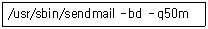
- sendmail을 foreground로 실행하고 메일 큐를 30분 간격으로 처리
- sendmail을 background로 실행하고 메일 큐를 30분 간격으로 처리
- sendmail을 foreground로 실행하고 메일 큐를 30초 간격으로 처리
- sendmail을 background로 실행하고 메일 큐를 30초 간격으로 처리
(정답률: 57%)
78. sendmail에서 사용하는 여러 데이터베이스 파일 중 sendmail 특정 도메인 메일러 라우팅 설정 파일로 알맞은 것은?
- access.db
- local-host-names.db
- virtusertable.db
- aliases.db
(정답률: 20%)
79. 다음은 ProFTPD 서버의 설정파일 proftpd.conf의 일부이다. 다음 익명 사용자에 대한 설정 내용중에 대한 설명으로 틀린 것은?
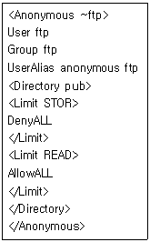
- 익명 사용자 anonymous로 접속을 하면 ftp라는 사용자 ID의 권한으로 접속이 되는 것이다.
- 익명 사용자 anonymous는 ftp라는 그룹 권한을 갖는다.
- 홈디렉토리 하위의 pub디렉토리에 업로드가 가능하다.
- 홈디렉토리 하위의 pub디렉토리에 접근이 가능하다.
(정답률: 19%)
80. 다음은 ProFTPD 설정 파일 proftpd.conf에서 사용되는 설정 지시자에 대한 설명으로 틀린 것은?
- ServerName - FTP 서버의 이름을 출력한다.
- ServerAdmin - FTP 서버의 관리자 로그인 ID를 설정한다.
- ServerType - ProFTPD 서버를 실행시킬 방식을 결정한다.
- DefaultRoot - FTP서버에 일반 계정으로 접속한 사용자의 최상위 디렉토리를 지정한다.
(정답률: 0%)
81. 다음은 ProFTPD 서버의 설정파일 proftpd.conf의 일부이다. 다음 익명 사용자에 대한 설정 내용 중에 대한 설명으로 틀린 것은?
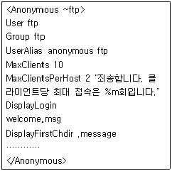
- UserAlias는 anonymous 사용자로 접속하면 ftp 사용자로 접근하도록 설정한 것이다.
- MaxClients는 anonymous 사용자로 접속할 경우 clients들의 최대 접속수를 설정한 것이다.
- DisplayLogin은 anonymous 사용자로 접속했을 때 보여줄 메시지가 들어있는 것은 welcome.msg라는 text파일이다.
- DisplayFirstChdir은 anonymous 사용자로 접속했을 때 보여줄 메시지가 들어있는 것은 .message라는 text파일이다.
(정답률: 39%)
82. ProFTPD의 실행파일인 proftpd의 옵션에 대한 설명 중 틀린 것은?
- -h : 실행파일인 proftpd의 사용방법을 출력 한다.
- -c : 기본 설정파일이 아닌 다른 설정파일로 실행한다.
- -l : ProFTPD에 관련된 설정내용의 목록을 보여준다.
- -t : 설정 내용의 문법을 검사한다.
(정답률: 10%)
83. sendmail에서 제공하는 메일 별명(alias)에 대한 기능 중 틀린 것은？
- 개인 사용자들을 위한 또 다른 이름
- 메일을 다른 호스트로 전달
- 메일 서버 호스트명 변경
- 메일링 리스트 제공
(정답률: 27%)
84. sendmail은 스패머들로부터 메일서버를 보호하기 위한 최소한의 접근제어를 /etc/mail/access 파일을 통해서 하고 있다. 다음은 메일의 Relay에 대한 설정 및 이에 대한 설명으로 틀린 것은?
- OK - 지정된 호스트나 사용자에게는 무조건 메일 수신
- REJECT - 지정된 도메인의 모든 메일을 송수신 거부
- DISCARD - 지정된 도메인에게서 메일을 받아 모두 폐기
- 550 - 지정된 메일 주소와 일치하는 메일 수신 거부
(정답률: 62%)
85. sendmail은 구동하게 되면 /var/maillog파일에 메일 전송에 대한 로그를 기록한다. 이 파일에 기록되는 로그 수준을 loglevel로 지정해 줄 수 있는데 다음 loglevel 값과 이에 대한 설명으로 틀린 것은？
- 0 - sendmail 구동에 관한 최소 정보만 기록
- 1 - 심각한 에러 또는 보안 정보 기록
- 8 - 메일 수신 성공 기록, 기본값
- 15 - 모은 SMTP 접속 기록
(정답률: 9%)
86. 다음 DNS(Domain Name System)에 대한 설명 중 틀린 것은?
- 컴퓨터가 인식하기 쉬운 숫자 주소체계를 사람들이 인식하기 쉬운 문자 주소체계로 변환해주는 시스템을 말한다.
- DNS는 도메인 이름을 계층형 구조로 설계하고 각 계층별 도메인에 대한 책임을 분산하여 따로 두는 분산 데이터베이스 구조를 갖고 있다.
- 국내 도메인 관리는 한국인터넷진흥원(NIDA)에서 담당하고 있다.
- DNS를 구현하기 위한 패키지 프로그램은 ISC의 named이다.
(정답률: 30%)
87. 다음은 DNS 서버의 forward 영역 파일의 설정 내용 중에 메일 서버와 관련된 내용이다. 이에 대한 설명으로 틀린 것은?
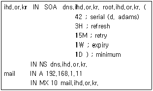
- 메일서버의 이름은 mail.ihd.or.kr이며 IP 주소는 192.168.1.11
- ihd.or.kr 도메인에 대한 메일서버의 URL mail.ihd.or.kr
- 메일서버인 mail.ihd.or.kr은 동시에 10개의 메일을 보낼 수 있다.
- mail.ihd.or.kr서버는 메일서버이다.
(정답률: 22%)
88. 다음 중 리눅스가 지원하는 네트워크 서비스와 프로그램의 연결이 알맞은 것은?
- 웹 서비스 - ssh
- 도메인 네임 서비스 - bind
- 네트워크 정보 서비스 - cvs
- 파일 버전 관리 서비스 - ypbind
(정답률: 알수없음)
89. 분산 컴퓨팅 환경에서 여러 작업을 하는 경우 각 시스템마다 인증을 거치는 것은 당연하지만 매번 번거로운 일이 아닐 수 없다. 이러한 번거로움을 줄일 수 있는 서비스로 알맞은 것은?
- NIS
- NFS
- CVS
- SSH
(정답률: 알수없음)
90. 독립되거나 구분되는 프로세스가 아니고, 네트워크 프로세스에 의해 불려지는 루틴들의 라이브러리라고 하는 변환기를 설정한 파일로 알맞은 것은?
- named.ca
- named.conf
- named.local
- resolv.conf
(정답률: 10%)
91. 다음은 FTP 서버를 구동하기 위한 슈퍼데몬(xinetd)의 ftp 설정파일의 내용이다. 옵션과 이에 대한 설명으로 틀린 것은?
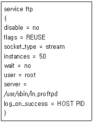
- instance = 50 : FTP 서버에 동시에 접속 할 수 있는 접속 수는 최대 50이다.
- user = root : FTP 서버에 접속하는 관리자 ID는 root이다.
- server = /usr/sbin/in.proftpd : 접속요청이 오면 실행되는 서버 프로그램을 명시한다.
- log_on_success = HOST PID : 서버가 성공적으로 실행되었을 때 저장할 기록은 HOST와 PID이다.
(정답률: 59%)
92. 다음 중 DHCP의 설정 파일인 dhcpd.conf의 설정 옵션 및 지시자에 대한 설명이 틀린 것은?
- option domain-name : 네임서버의 도메인 이름을 지정
- default-lease-time : 클라이언트에게 동적으로 IP 주소를 임대해 줄 기본시간. 단위는 시간 단위
- option domain-name-server : 클라이언트가 사용할 네임서버 주소를 지정
- range : 지정한 subnet에서 할당 가능한 IP 주소 범위를 지정
(정답률: 알수없음)
93. DHCP 서버를 구동할 때 사용되는 dhcpd실행 옵션에 대한 설명으로 틀린 것은?
- -p : 실행할 때 사용할 서비스 포트번호
- -cf : 실행할 때 사용할 설정파일
- -lf : 실행할 때 사용할 릴리즈파일
- -l : 실행할때 사용하 파일의 목록 나열
(정답률: 0%)
94. 다음 중 CVS(Concurrent Version System)에 대한 설명으로 틀린 것은?
- CVS는 서비스 포트 2401번을 사용한다.
- CVS는 익명사용자 접근을 지원하지 않는다.
- repository(저장소)는 현재 개발 중인 소스를 모아둔 곳이다.
- KDE, GNOME, APACHE 등의 다양한 프로젝트도 CVS를 이용하고 있다.
(정답률: 34%)
95. 다음은 CVS를 이용하여 프로젝트를 수행하는 절차를 순서 없이 나열한 것이다. 순서대로 나열된 것 중 알맞은 것은?
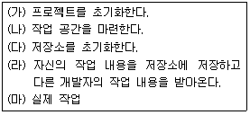
- (가)-(나)-(다)-(라)-(마)
- (나)-(다)-(가)-(라)-(마)
- (다)-(가)-(나)-(마)-(라)
- (가)-(나)-(다)-(마)-(라)
(정답률: 알수없음)
96. 시스템이 해킹을 당한 후, 해커가 다음과 같은 파일들을 변형한 경우 그에 따른 결과를 서술한 것 중 틀린 것은?
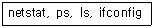
- ls 명령이 변경된 것으로 보아, 파일시스템이 존재하는 파일이 출력되지 않을 수 도 있다.
- ifconfig가 변형된것을 보아, 스니퍼가 동작중일 가능성이 있다.
- netstat 명령이 변형되면, 현재 열린 포트 정보를 믿을 수 없다.
- find 명령을 이용하면, ls 명령으로 찾을 수 없는 백도어 프로그램도 찾을 수 있을 것이다.
(정답률: 24%)
97. 다음중 해커가 시스템에 침입하여 로그를 삭제 할 때 일반적으로 가장 나중에 삭제하는 로그 명칭으로 알맞은 것은?
- messages
- utmp
- history
- wtmp
(정답률: 47%)
98. 외부에서 침입을 당해 해킹을 당했을 경우 해커에 의해 백도어 설치등의 이유로 변형될 가능성이 가장 높은 프로그램으로 알맞은 것은?
- ifconfig, netstat
- passwd, ps
- login, ls
- 프로그램 모두 해당
(정답률: 37%)
99. FTP 를 통한 root 접근을 막기 위해 설정할 수 있는 설정파일로 알맞은 것은?
- /etc/ftpaccess
- /etc/ftpusers
- /etc/ftphosts
- /etc/ftpconversions
(정답률: 39%)
100. 시스템 해킹에 대비한 운영 방법으로 가장 올바르지 않은 것은?
- 로그서버는 별도로 준비하고, 최소한의 서비스만을 가동한다.
- 데이터는 주기적으로 백업하도록 하고, 백업 테이프는 여러개를 번갈아 사용하도록 한다.
- 시스템 설정이나, 바이너리 파일등은 tripwire 같은 프로그램으로 항상 감시하도록 한다.
- 방화벽을 이용하여 필요한 포트만 오픈하고 백신을 이용한 실시간 감지기능을 이용하면 포트를 통한 해킹을 당하지 않는다.
(정답률: 30%)